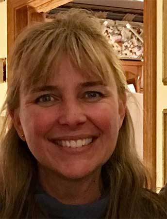

Some of you have seen Bee Movie -- the 2007 animated film that praises bees for making the world go ‘round while raising awareness about the declining bee population.
This fun movie motivated me to help. But how? I felt powerless to help bring back the bees until I heard about Masanobu Fukuoka’s success story. This Japanese gardener introduced the simple seed bomb solution -- mix soil and seeds to throw and go.
Loved the concept! But I wanted an even easier way for anyone-- from first time gardener to veteran conservationist -- to create habitats for bees and other beneficial bugs.
With New Leaf Seedpodz it is just that easy!
Our family developed a secret recipe for our signature Seedpodz with the dome top and flat bottom so you can toss it or plant it successfully wherever you want colorful conservation to grow.
We use only high-quality annual and perennial seeds (non-GMO) with proven germination rates in growing zones 2 thru 9; nutrient rich soil made from compost; and, finally, the right type and amount of clay binder to make our Seedpodz open in the rain and bloom in the sunshine.
For all five of our seed blends we hand mix ingredients in 20-quart salad bowls; hand shape the Seedpodz and dry them without killing seeds through premature germination.
Because we cherish sustainability at New Leaf Seedpodz, lots of eco-friendly consideration goes into every step of our conservation-related work -- from our commitment to use only non genetically modified organism seeds to our natural cotton bag packaging and no gloss, compostable tag.
Thank you for your partnership!

Cathy Wolfenden
New Leaf Seedpodz, General Manager
Galena, IL USA
Cell: 815-281-3145
Email: info@seedpodz.com